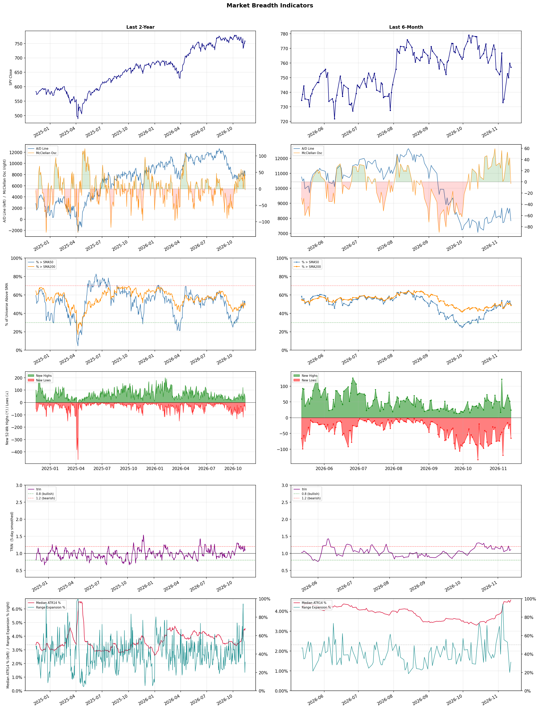

A daily market breadth and sector rotation report for active investors
| Item | Read |
|---|---|
| Regime downgraded | Selective Risk-On → Defensive |
| Regime | Defensive |
| Risk posture | Defensive |
| Universe | 1,312 stocks tracked · 24 new 52-week highs · 30 active swing setups |
| Breadth | only 49.2% of tracked stocks are above SMA50, new lows exceed new highs (65 vs 24), McClellan oscillator (breadth momentum) is negative at -3.1 |
| Leadership | Advertising Agencies, Health Information Services, and Specialty Retail |
| Weakest groups | Uranium, Other Industrial Metals & Mining, and Electrical Equipment & Parts |
Use this report to prioritize research and chart review; validate entries, stops, liquidity, earnings, and risk before acting.
| Item | Read |
|---|---|
| Primary read | Defensive regime with Defensive risk posture. |
| Research queue | STGW, APP, MGNI, TTD, EVC |
| Leadership focus | Advertising Agencies, Health Information Services, and Specialty Retail |
| Caution list | Uranium, Other Industrial Metals & Mining, and Electrical Equipment & Parts |
| Review prompt | Check extension risk, chart location, fundamentals, valuation, and earnings before using any research row. |
| Item | Read |
|---|---|
| Primary read | 4 active risk warnings; use screen output as watchlist input only. |
| Bullish screens | COST, PGR, TEVA, FAST, OGE |
| Bearish screens | TLRY, ALLO, BABA, LU, QFIN |
| Alerts / levels | Automated trigger, stop, ATR, liquidity, reward/risk, and event-risk levels are pending future enrichment. |
| Review prompt | Open the linked chart, define trigger and invalidation, then check liquidity and event risk independently. |
Risk Posture: Defensive — screen backdrop favors caution; require independent risk review before new exposure
Metric context: McClellan below -50 = elevated selling pressure; below -100 = washout territory. Range Expansion = share of stocks with daily range above their 20-day average. Signal Density = share of tracked names appearing in signal screens.
| Breadth Date | % > SMA50 | % > SMA200 | New Highs | New Lows | McClellan | Median Range | Avg Range | Median ATR14 | Range Expansion | Signal Density |
|---|---|---|---|---|---|---|---|---|---|---|
| 2026-11-12 | 49.2% | 48.7% | 24 | 65 | -3.1 | 3.4% | 4.2% | 4.6% | 31.2% | 19.2% |

Regime downgraded: Selective Risk-On → Defensive
Prior comparison date: November 11, 2026
| Metric | Prior | Current | Change |
|---|---|---|---|
| Regime | Selective Risk-On | Defensive | changed |
| Risk Posture | Selective | Defensive | changed |
| % > SMA50 | 53.2% | 49.2% | -4.0 pts |
| % > SMA200 | 51.0% | 48.7% | -2.3 pts |
| New Highs | 52 | 24 | -28 |
| New Lows | 21 | 65 | -44 |
Top-10 industries entering: Discount Stores, Insurance - Property & Casualty, and Insurance Brokers. Top-10 industries leaving: Household & Personal Products, Medical Instruments & Supplies, and Restaurants. New multi-signal long setups: BRZE, COST, EPD, ES, FAST, OGE, PGR. New multi-signal short setups: BABA, NIO, QFIN.
| Status | Tickers | Read |
|---|---|---|
| Added | AKR, ALKS, ALL, BABA, BRZE, CB, COST, EPD | New technical screen matches vs prior report. |
| Removed | ABR, AGNT, AMRX, BTSG, CBOE, CDW, CME, DIS | No longer present in today's technical screen matches. |
| Still Active | ALLO, BLMN, LU, PGNY, QSR, TRP | Appeared in both current and prior reports. |
| Promoted | none | Model Screen Score improved by at least 15 points. |
| Downgraded | none | Model Screen Score declined by at least 15 points. |
| Direction | Industry | ETF | Prior Rank | Current Rank | Days | Rank Change |
|---|---|---|---|---|---|---|
| Rose | Airlines | N/A | 74 | 12 | 28 | +62 |
| Rose | Restaurants | N/A | 72 | 15 | 42 | +57 |
| Rose | REIT - Retail | N/A | 77 | 22 | 35 | +55 |
| Rose | Leisure | N/A | 70 | 16 | 42 | +54 |
| Rose | Beverages - Non-Alcoholic | XLP | 58 | 7 | 42 | +51 |
Bull: The airline industry is experiencing a bullish trend due to a combination of increasing sector momentum and strong consumer demand for travel, as highlighted by Delta Air Lines' recent performance and positive outlooks from analysts. Despite United Airlines' disappointing earnings, the stock is still rising, indicating investor confidence in the sector's resilience and recovery potential. Additionally, the focus on fuel volatility suggests that airlines are effectively managing costs, further enhancing their profitability outlook in a recovering travel market.
Bear: While the airline industry may currently exhibit a rising trend and some positive headlines, the underlying fundamentals present significant risks that could undermine this optimism. The recent earnings disappointment from United Airlines raises concerns about the sustainability of profitability amidst rising operational costs and potential economic headwinds, including inflation and consumer spending fatigue. Furthermore, the focus on fuel volatility suggests that airlines may not be effectively managing costs as much as the bullish narrative implies, leaving them vulnerable to sudden price spikes that could erode margins and dampen investor confidence.
Verdict: The airline industry's bullish trend is primarily driven by robust consumer demand for travel and effective cost management amid rising fuel prices, as evidenced by positive performances from major players like Delta Air Lines. However, the key risk highlighted by the bear case is the potential for economic headwinds, such as inflation and consumer spending fatigue, which could undermine profitability and investor confidence if operational costs continue to rise without corresponding revenue growth. Investors should closely monitor economic indicators and airline earnings reports to gauge the sustainability of this upward momentum.
Sources: Google News
Bull: The rising relative strength of the restaurant industry can be attributed to a combination of resilient consumer spending and strategic positioning by leading companies, as highlighted by the optimism in articles discussing the best restaurant ETFs for 2026. Despite recent turbulence, firms like Darden Restaurants are showing potential for outperformance against the broader consumer discretionary sector, suggesting that well-managed chains are effectively navigating cost pressures and changing consumer habits. This resilience indicates a recovery trajectory, making the restaurant sector an attractive investment opportunity amid broader market volatility.
Bear: While the rising relative strength of the restaurant industry may initially appear promising, it is crucial to consider the underlying pressures that could undermine this trend. Increasing costs, particularly in labor and food supply, are squeezing margins, and consumer habits are shifting towards more affordable dining options, which may not favor established chains like Darden Restaurants. Furthermore, the recent sector-wide selling, exemplified by the Cheesecake Factory's significant drop, signals that investor sentiment is turning cautious, suggesting that the optimism surrounding the industry's recovery may be overblown.
Verdict: The restaurant industry's rising strength is primarily driven by resilient consumer spending and the strategic adaptability of leading chains, positioning them for potential outperformance despite broader market challenges. However, key risks include escalating labor and food costs, which could pressure margins and shift consumer preferences towards more affordable dining options, potentially undermining the recovery narrative. Investors should closely monitor these cost dynamics and consumer behavior trends when considering positions in the sector.
Sources: Google News
Bull: The rising relative strength of the Retail REIT sector is likely driven by a combination of robust leasing activity and a constrained supply environment, as highlighted in the Yahoo Finance article discussing retail REITs poised to benefit from these factors. Additionally, positive sentiment from analysts, as seen in the Morningstar and Motley Fool articles, suggests that despite higher interest rates, the sector remains attractive due to its potential for strong dividend yields and resilience in consumer demand, bolstering investor confidence.
Bear: While the rising relative strength of the Retail REIT sector may seem promising, it is crucial to consider the broader economic context, including persistent inflation and the potential for a consumer spending slowdown as interest rates remain elevated. Additionally, the optimism surrounding leasing activity may be overstated, as many retailers are still grappling with e-commerce competition and shifting consumer preferences, which could lead to increased vacancy rates and pressure on rental income in the long term.
Verdict: The Retail REIT sector's rising strength is primarily attributed to robust leasing activity and a constrained supply environment, which have fostered positive investor sentiment and strong dividend yields. However, the key risk lies in the potential for a consumer spending slowdown driven by persistent inflation and elevated interest rates, which could undermine rental income and lead to increased vacancy rates in the long term. Investors should remain cautious and monitor economic indicators closely to assess the sustainability of this trend.
Sources: Google News
Bull: The Leisure sector is experiencing a rising relative strength primarily due to a resurgence in consumer demand for travel and recreation as pandemic-related restrictions ease, coupled with a growing interest in innovative leisure experiences driven by technological advancements, such as AI. Recent headlines highlight the potential for growth in travel and tourism stocks, indicating investor confidence in the sector's resilience and adaptability amid industry pressures, as well as a focus on companies that are poised to capitalize on evolving consumer preferences. This combination of strong demand and strategic innovation positions the Leisure sector favorably compared to other industries.
Bear: While the bull thesis highlights a resurgence in consumer demand and innovation, it overlooks significant headwinds facing the Leisure sector, such as rising inflation and potential economic downturns that could curtail discretionary spending on travel and recreation. Additionally, the reliance on technological advancements, including AI, may not translate into immediate benefits for all companies, as the disparity in adoption and execution could widen the gap between winners and losers, ultimately leading to increased volatility and risk in the sector.
Verdict: The Leisure sector's rising strength is fundamentally driven by a rebound in consumer demand for travel and recreation as pandemic restrictions ease, alongside a push for innovative experiences through technology. However, the key risk lies in the potential impact of rising inflation and economic downturns that could limit discretionary spending, making it essential for investors to focus on companies with strong fundamentals and effective technology adoption strategies to mitigate volatility.
Sources: Google News
Bull: The Beverages - Non-Alcoholic sector is experiencing rising relative strength primarily due to shifting consumer preferences, particularly among younger demographics like Gen Z, who are increasingly gravitating towards healthier, non-alcoholic options as indicated by headlines discussing the threat to the alcohol industry. Additionally, the focus on innovation within the beverage space, as highlighted in articles about the best beverage stocks, suggests that companies in this sector are actively developing new products to meet changing consumer demands, positioning themselves for robust growth in the coming years.
Bear: While the rising relative strength in the Beverages - Non-Alcoholic sector may appear promising, it is essential to recognize that this growth is heavily influenced by a niche market that may not sustain long-term momentum. The headlines focusing on the alcohol industry’s challenges and the rise of non-alcoholic options could signal a temporary shift rather than a fundamental change in consumer behavior, as traditional beverage companies may struggle to innovate and compete effectively against established alcohol brands. Furthermore, economic uncertainties and potential shifts in disposable income could lead consumers to prioritize cost over health trends, dampening the anticipated growth in the non-alcoholic segment.
Verdict: The Beverages - Non-Alcoholic sector is gaining traction due to a significant shift in consumer preferences towards healthier options, particularly among younger demographics like Gen Z, who are increasingly opting for non-alcoholic beverages. However, a key risk to this growth is the potential for economic uncertainties to shift consumer priorities towards cost over health, which could undermine the momentum of this trend if disposable incomes decline. Companies in this sector should focus on innovation and value offerings to mitigate this risk and sustain growth.
Sources: Google News
| Direction | Industry | ETF | Prior Rank | Current Rank | Days | Rank Change |
|---|---|---|---|---|---|---|
| Fell | Computer Hardware | XLK | 4 | 83 | 42 | -79 |
| Fell | Semiconductor Equipment & Materials | SOXX | 3 | 79 | 42 | -76 |
| Fell | Copper | COPX | 12 | 81 | 42 | -69 |
| Fell | Semiconductors | SOXX | 6 | 70 | 42 | -64 |
| Fell | Electronic Components | XLK | 7 | 71 | 42 | -64 |
Bear: While the shift in investor sentiment towards AI and quantum computing may seem promising, it could also indicate a speculative bubble in these emerging technologies that may not materialize as expected. Furthermore, the ongoing divestment from chip stocks by hedge funds suggests a broader concern about the sustainability of growth in the Computer Hardware sector, particularly as supply chain issues and rising production costs continue to pressure profit margins. This could lead to a prolonged period of underperformance for traditional hardware companies, as they struggle to innovate and compete in an increasingly crowded and volatile market.
Bull: The relative weakness in the Computer Hardware sector, as indicated by recent headlines, is primarily driven by a shift in investor sentiment toward AI and quantum computing technologies, which are perceived as more promising growth areas. As highlighted in articles from The Motley Fool and Business Insider, there is a growing emphasis on investing in AI stocks and quantum computing, leading to a reallocation of capital away from traditional hardware companies, particularly those involved in AI hardware, as hedge funds have begun to divest from chip stocks. This trend suggests that investors are prioritizing sectors with higher growth potential, contributing to the decline in the relative strength of the Computer Hardware industry.
Verdict: The Computer Hardware industry is experiencing a decline primarily due to a shift in investor focus towards AI and quantum computing technologies, which are perceived as having greater growth potential. However, the key risk is the possibility of a speculative bubble in these emerging sectors, coupled with ongoing supply chain challenges and rising production costs that could hinder traditional hardware companies' profitability and innovation. Investors should remain cautious and consider diversifying their portfolios to mitigate exposure to potential volatility in both hardware and emerging tech markets.
Sources: Google News
Bear: While the bullish case emphasizes strong fundamentals and AI-driven demand, it overlooks the significant risks posed by potential supply chain disruptions and geopolitical tensions that could impact production and distribution in the semiconductor sector. Additionally, the historical context of boom-and-bust cycles suggests that even with current strong demand, the market may be overreacting to short-term growth prospects, leading to a potential correction as investors reassess valuations amidst broader economic uncertainties.
Bull: The Semiconductor Equipment & Materials sector is experiencing a decline in relative strength primarily due to broader market concerns about overvaluation, as suggested by Barron's comparison to a potential "dot-com bubble." Despite strong fundamentals highlighted by Applied Materials' robust quarterly performance and optimistic forecasts driven by AI chip demand, investor sentiment may be cautious due to fears of a cyclical downturn in semiconductor demand, leading to volatility in stock prices across the sector. This sentiment is exacerbated by the industry's historical susceptibility to boom-and-bust cycles, making investors wary despite positive earnings reports.
Verdict: The Semiconductor Equipment & Materials sector is likely experiencing a decline due to investor concerns about overvaluation and the cyclical nature of semiconductor demand, despite strong fundamentals and AI-driven growth. Key risks include potential supply chain disruptions and geopolitical tensions that could adversely affect production, prompting investors to reassess valuations and leading to increased volatility in stock prices. To navigate this environment, investors should closely monitor geopolitical developments and supply chain stability while considering the long-term growth potential driven by AI advancements.
Sources: Google News
Bear: While the bull analyst attributes the decline in copper's relative strength primarily to tariff uncertainty and shifting investor focus, it's crucial to recognize that the fundamentals of the copper market are also under pressure from broader economic concerns, including potential recessions in key markets and slowing demand from China, the world's largest consumer. Additionally, the rising costs of mining operations and regulatory challenges in major copper-producing regions could further squeeze margins, making copper stocks less attractive in the long term despite any short-term fluctuations driven by tariffs or emerging technologies.
Bull: The recent decline in copper's relative strength can be attributed to heightened uncertainty surrounding tariffs, as indicated by multiple headlines reporting significant drops in major copper stocks like Freeport-McMoRan and Teck Resources. This tariff doubt has likely spooked investors, reversing the previous rally in copper prices and creating a more cautious market sentiment. Additionally, the focus on emerging trends, such as the AI boom, may be diverting investment interest away from copper stocks, further contributing to their relative weakness.
Verdict: The recent decline in copper prices is primarily driven by broader economic concerns, including potential recessions in key markets and weakening demand from China, which significantly impacts consumption. Additionally, rising mining costs and regulatory challenges pose a key risk to copper stocks, suggesting that investors should remain cautious and consider the long-term viability of their investments in this sector amidst these pressures.
Sources: Google News
Bear: While the bull analyst attributes the semiconductor sector's relative weakness to broader market volatility, it's essential to recognize that the industry's fundamentals are deteriorating. The headlines suggesting "buying the dip" may indicate a lack of confidence among investors, as they are trying to capitalize on short-term fluctuations rather than long-term growth. Furthermore, persistent supply chain disruptions, coupled with waning demand in key markets like consumer electronics and automotive, signal that the sector may face significant headwinds that could undermine the optimistic projections for 2026.
Bull: The relative weakness in the semiconductor sector, as indicated by its falling strength compared to other industries, can be attributed to broader market volatility and investor caution, as highlighted by headlines discussing "buying the dip" and hedge fund trading strategies. Additionally, while there are positive projections for semiconductor stocks in 2026, the current market sentiment may be influenced by short-term concerns about supply chain disruptions and demand fluctuations, which can overshadow the long-term growth potential emphasized in reports from sources like U.S. News and The Motley Fool.
Verdict: The semiconductor industry's recent decline can be fundamentally attributed to deteriorating demand in critical sectors such as consumer electronics and automotive, compounded by ongoing supply chain disruptions. While there are optimistic projections for 2026, the key risk lies in the potential for these short-term challenges to persist, undermining investor confidence and hindering the sector's recovery. Investors should remain cautious and closely monitor demand trends and supply chain developments before making significant commitments.
Sources: Google News
Bear: While the bull analyst attributes the sector's relative weakness to broader market dynamics, the reality is that the electronic components industry is facing fundamental challenges such as supply chain disruptions, rising raw material costs, and increasing competition from emerging technologies that threaten traditional players. The surge in stocks like Vishay Intertechnology may be more of a short-term reaction rather than a sustainable trend, as the overall mixed earnings reports from companies like Knowles and TTM Technologies indicate deeper issues within the sector that could hinder long-term growth. Additionally, the shift in investor focus toward robotics and other advanced technologies suggests a potential decline in demand for conventional electronic components, further exacerbating the sector's struggles.
Bull: The relative weakness in the Electronic Components sector can be attributed to broader market dynamics and sector-specific challenges, as highlighted by the recent Q3 earnings reports. While companies like Vishay Intertechnology have seen significant surges, the overall sector is grappling with mixed earnings results, as indicated by the Q3 highlights from various firms like Knowles and TTM Technologies. Additionally, the growing interest in robotics, as mentioned in the Motley Fool article, suggests a shift in investor focus toward emerging technologies, potentially diverting capital away from traditional electronic components.
Verdict: The electronic components industry is experiencing a downturn primarily due to fundamental challenges such as supply chain disruptions, rising raw material costs, and heightened competition from emerging technologies. While there are isolated instances of growth, like Vishay Intertechnology, the mixed earnings reports from companies like Knowles and TTM Technologies highlight deeper systemic issues that could hinder long-term recovery. Investors should remain cautious, as the shift toward robotics and advanced technologies poses a significant risk of declining demand for traditional electronic components.
Sources: Google News
| Industry | Rank | ETF | 7d | 14d | 28d | 42d | Chg 42d | Size | 20D | 60D | Composite | Active Setups |
|---|---|---|---|---|---|---|---|---|---|---|---|---|
| Advertising Agencies | 1 | N/A | 10 | 48 | 32 | 45 | +44 | 7 | 21.4% | 15.3% | 0.978 | 0 |
| Health Information Services | 2 | N/A | 2 | 1 | 6 | 5 | +3 | 12 | 10.6% | 24.8% | 0.902 | 1 |
| Specialty Retail | 3 | XRT | 5 | 11 | 15 | 18 | +15 | 13 | 12.9% | 11.8% | 0.895 | 0 |
| REIT - Hotel & Motel | 4 | XLRE | 15 | 2 | 11 | 11 | +7 | 9 | 7.5% | 9.5% | 0.894 | 0 |
| Discount Stores | 5 | XRT | 4 | 10 | 3 | 16 | +11 | 7 | 6.1% | 12.1% | 0.884 | 0 |
| Apparel Manufacturing | 6 | N/A | 1 | 5 | 12 | 28 | +22 | 6 | 10.2% | 19.2% | 0.883 | 0 |
| Beverages - Non-Alcoholic | 7 | XLP | 8 | 24 | 26 | 58 | +51 | 7 | 9.4% | 4.3% | 0.854 | 0 |
| Medical Care Facilities | 8 | IHF | 9 | 4 | 16 | 21 | +13 | 9 | 10.3% | 15.7% | 0.854 | 0 |
| Insurance Brokers | 9 | N/A | 3 | 12 | 19 | 27 | +18 | 6 | 7.1% | 2.8% | 0.834 | 0 |
| Insurance - Property & Casualty | 10 | KIE | 18 | 17 | 22 | 39 | +29 | 8 | 6.8% | 6.1% | 0.826 | 0 |
Rank columns (7d–42d) show the industry's rank that many trading days ago — lower is stronger. Chg 42d = rank change vs 42 trading days ago — positive means the industry moved up. 20D and 60D are the mean stock return within the industry over that period. Active Setups: count of today's swing-trade candidates from this industry appearing across all signal screens.
| Industry | Rank | ETF | 7d | 14d | 28d | 42d | Chg 42d | Size | 20D | 60D | Composite | Active Setups |
|---|---|---|---|---|---|---|---|---|---|---|---|---|
| Uranium | 87 | URA | 87 | 87 | 87 | 82 | -5 | 6 | -17.2% | -39.9% | 0.014 | 0 |
| Other Industrial Metals & Mining | 86 | N/A | 86 | 86 | 83 | 76 | -10 | 21 | -16.5% | -36.6% | 0.034 | 0 |
| Electrical Equipment & Parts | 85 | XLI | 84 | 85 | 86 | 46 | -39 | 12 | -14.1% | -32.4% | 0.060 | 0 |
| REIT - Mortgage | 84 | N/A | 68 | 83 | 84 | 85 | +1 | 11 | -11.5% | -29.4% | 0.090 | 0 |
| Computer Hardware | 83 | XLK | 82 | 68 | 62 | 4 | -79 | 15 | -18.1% | -27.2% | 0.097 | 0 |
| Auto Parts | 82 | N/A | 78 | 84 | 73 | 50 | -32 | 19 | -10.8% | -23.2% | 0.113 | 0 |
| Copper | 81 | COPX | 76 | 71 | 27 | 12 | -69 | 6 | -14.8% | -18.5% | 0.129 | 0 |
| Gold | 80 | GDX | 64 | 74 | 57 | 37 | -43 | 25 | -7.7% | -19.8% | 0.141 | 0 |
| Semiconductor Equipment & Materials | 79 | SOXX | 85 | 75 | 51 | 3 | -76 | 17 | -11.3% | -21.3% | 0.152 | 0 |
| Internet Content & Information | 78 | N/A | 69 | 69 | 31 | 43 | -35 | 24 | -13.9% | -17.2% | 0.159 | 0 |
Rank columns (7d–42d) show the industry's rank that many trading days ago — lower is stronger. Chg 42d = rank change vs 42 trading days ago — positive means the industry moved up. 20D and 60D are the mean stock return within the industry over that period. Active Setups: count of today's swing-trade candidates from this industry appearing across all signal screens.
These are research candidates from top-ranked stocks, capped at five names per industry to avoid over-concentration. Returns shown (60D, 120D, 250D) are historical — they reflect where prices have already moved, not forward expectations. Extension Risk flags names that may require extra patience or a better entry point. They are not buy signals.
Chart: TV = TradingView chart (opens in browser); PDF = local chart file (if downloaded).
| Ticker | Name | Industry | Industry Rank | Market Cap | 60D Hist | 120D Hist | 250D Hist | Extension Risk | Research Reason | Chart |
|---|---|---|---|---|---|---|---|---|---|---|
| STGW | Stagwell | Advertising Agencies | 1 | N/A | 28.0% | 71.3% | 130.4% | Constructive | Top-ranked in industry | TV |
| APP | Applovin | Advertising Agencies | 1 | N/A | 26.7% | -18.3% | -29.2% | Constructive | Top-ranked in industry | TV |
| MGNI | Magnite | Advertising Agencies | 1 | N/A | 23.0% | 122.3% | 106.2% | Extended | Top-ranked in industry; extended | TV |
| TTD | The Trade Desk | Advertising Agencies | 1 | N/A | 14.3% | -30.9% | -63.9% | Constructive | Top-ranked in industry | TV |
| EVC | Entravision Communications | Advertising Agencies | 1 | N/A | 12.6% | -3.0% | 244.6% | Constructive | Top-ranked in industry | TV |
| SDGR | Schrodinger | Health Information Services | 2 | N/A | 55.4% | 132.0% | 79.4% | Extended | Top-ranked in industry; extended | TV |
| CERT | Certara | Health Information Services | 2 | N/A | 42.3% | 127.1% | 41.5% | Extended | Top-ranked in industry; extended | TV |
| HNGE | Hinge Health | Health Information Services | 2 | N/A | 36.8% | 119.0% | 189.8% | Extended | Top-ranked in industry; extended | TV |
| HTFL | Heartflow | Health Information Services | 2 | N/A | 31.6% | 103.2% | 93.7% | Extended | Top-ranked in industry; extended | TV |
| TDOC | Teladoc Health | Health Information Services | 2 | N/A | 30.5% | 32.3% | 22.9% | Constructive | Top-ranked in industry | TV |
| ASO | Academy | Specialty Retail | 3 | N/A | 41.8% | 28.9% | 52.1% | Constructive | Top-ranked in industry | TV |
| ARHS | Arhaus | Specialty Retail | 3 | N/A | 37.5% | 113.9% | 54.7% | Extended | Top-ranked in industry; extended | TV |
| EVGO | EVgo Inc | Specialty Retail | 3 | N/A | 14.4% | -6.9% | -41.5% | Constructive | Top-ranked in industry | TV |
| FIVE | Five Below | Specialty Retail | 3 | N/A | 2.1% | 12.6% | 68.1% | Constructive | Top-ranked in industry | TV |
| WOOF | Petco Health and Wellness | Specialty Retail | 3 | N/A | -2.7% | 8.3% | -5.9% | Lagging | Top-ranked in industry; lagging | TV |
| APLE | Apple Hospitality REIT Inc | REIT - Hotel & Motel | 4 | N/A | 20.7% | 38.5% | 79.0% | Constructive | Top-ranked in industry | TV |
| PEB | Pebblebrook Hotel Trust | REIT - Hotel & Motel | 4 | N/A | 17.6% | 46.4% | 95.2% | Constructive | Top-ranked in industry | TV |
| INN | Summit Hotel Properties Inc | REIT - Hotel & Motel | 4 | N/A | 17.6% | 31.1% | 40.9% | Constructive | Top-ranked in industry | TV |
| RLJ | RLJ Lodging Trust | REIT - Hotel & Motel | 4 | N/A | 15.8% | 38.8% | 85.0% | Constructive | Top-ranked in industry | TV |
| DRH | DIAMONDROCK HOSPITALITY CO | REIT - Hotel & Motel | 4 | N/A | 14.1% | 36.5% | 66.7% | Constructive | Top-ranked in industry | TV |
These are technical screen matches from existing signal files. They are not trade recommendations. Trigger, stop, ATR, liquidity, reward/risk, and event risk still require separate validation until those inputs are available.
Model Screen Score is weighted by signal count, industry rank, freshness, and setup type. It is not a probability of profit, expected return, or suitability rating. Industry cap: max 3 candidates per industry.
Signal glossary: Momentum Pullback = stock in an uptrend that has pulled back 10–30% and shows re-entry conditions. MA Compression = short- and long-term moving averages converging, often preceding a directional move. Three-Day Up/Down = three consecutive closes in the same direction. New 52Wk High/Low = price reached a new annual extreme.
Chart: TV = TradingView chart (opens in browser); PDF = local chart file (if downloaded).
| Ticker | Industry | Setups | Close | Industry Rank | Signal Count | Model Screen Score | Reason | Chart |
|---|---|---|---|---|---|---|---|---|
| COST | Discount Stores | New 52Wk High; Three-Day Up | 1092.21 | 5 | 2 | 93 | Multi-signal; top industry breakout | TV |
| PGR | Insurance - Property & Casualty | New 52Wk High; Three-Day Up | 235.49 | 10 | 2 | 85 | Multi-signal; top industry breakout | TV |
| TEVA | Drug Manufacturers - Specialty & Generic | New 52Wk High; Three-Day Up | 43.65 | 17 | 2 | 77 | Multi-signal; new-high strength | TV |
| FAST | Industrial Distribution | New 52Wk High; Three-Day Up | 55.55 | 21 | 2 | 77 | Multi-signal; new-high strength | TV |
| OGE | Utilities - Regulated Electric | New 52Wk High; Three-Day Up | 51.26 | 23 | 2 | 77 | Multi-signal; new-high strength | TV |
| PGNY | Healthcare Plans | New 52Wk High; Three-Day Up | 36.58 | 24 | 2 | 77 | Multi-signal; new-high strength | TV |
| ES | Utilities - Regulated Electric | MA Compression; Three-Day Up | 71.15 | 23 | 2 | 72 | Multi-signal; compression setup | TV |
| BRZE | Software - Application | New 52Wk High; Three-Day Up | 46.61 | 42 | 2 | 65 | Multi-signal; new-high strength | TV |
| XERS | Biotechnology | New 52Wk High; Three-Day Up | 16.65 | 58 | 2 | 65 | Multi-signal; new-high strength | TV |
| EPD | Oil & Gas Midstream | MA Compression; Three-Day Up | 37.40 | 47 | 2 | 60 | Multi-signal; compression setup | TV |
| TRP | Oil & Gas Midstream | MA Compression; Three-Day Up | 64.53 | 47 | 2 | 60 | Multi-signal; compression setup | TV |
| TDOC | Health Information Services | Momentum Pullback | 8.69 | 2 | 1 | 65 | Single-signal; top industry pullback | TV |
| TEM | Health Information Services | Momentum Pullback | 75.89 | 2 | 1 | 65 | Single-signal; top industry pullback | TV |
| BLMN | Restaurants | Momentum Pullback | 10.12 | 15 | 1 | 50 | Single-signal; pullback setup | TV |
| QSR | Restaurants | MA Compression | 75.48 | 15 | 1 | 45 | Single-signal; compression setup | TV |
| ALKS | Drug Manufacturers - Specialty & Generic | Momentum Pullback | 46.98 | 17 | 1 | 42 | Single-signal; pullback setup | TV |
| VSTS | Rental & Leasing Services | Momentum Pullback | 14.19 | 19 | 1 | 42 | Single-signal; pullback setup | TV |
| ALL | Insurance - Property & Casualty | Three-Day Up | 266.69 | 10 | 1 | 40 | Single-signal; top industry setup | TV |
| CB | Insurance - Property & Casualty | Three-Day Up | 371.76 | 10 | 1 | 40 | Single-signal; top industry setup | TV |
| REG | REIT - Retail | MA Compression | 75.74 | 22 | 1 | 37 | Single-signal; compression setup | TV |
| ETR | Utilities - Regulated Electric | MA Compression | 111.95 | 23 | 1 | 37 | Single-signal; compression setup | TV |
| TREX | Building Products & Equipment | Momentum Pullback | 52.81 | 33 | 1 | 35 | Single-signal; pullback setup | TV |
| FUN | Leisure | Three-Day Up | 11.19 | 16 | 1 | 32 | Single-signal; upside pattern | TV |
| AKR | REIT - Retail | Three-Day Up | 20.25 | 22 | 1 | 32 | Single-signal; upside pattern | TV |
Bearish setups — stocks making new lows or showing persistent downside patterns. Validate carefully before acting.
| Ticker | Industry | Setups | Close | Industry Rank | Signal Count | Model Screen Score | Reason | Chart |
|---|---|---|---|---|---|---|---|---|
| TLRY | Drug Manufacturers - Specialty & Generic | New 52Wk Low; Three-Day Down | 2.49 | 17 | 2 | 47 | Multi-signal; new-low weakness | TV |
| ALLO | Biotechnology | New 52Wk Low; Three-Day Down | 0.83 | 58 | 2 | 35 | Multi-signal; new-low weakness | TV |
| BABA | Internet Retail | New 52Wk Low; Three-Day Down | 94.36 | 60 | 2 | 35 | Multi-signal; new-low weakness | TV |
| LU | Credit Services | New 52Wk Low; Three-Day Down | 6.58 | 67 | 2 | 25 | Multi-signal; new-low weakness | TV |
| QFIN | Credit Services | New 52Wk Low; Three-Day Down | 5.15 | 67 | 2 | 25 | Multi-signal; new-low weakness | TV |
| NIO | Auto Manufacturers | New 52Wk Low; Three-Day Down | 3.05 | 68 | 2 | 25 | Multi-signal; new-low weakness | TV |
How To Use This Report
| Use | Purpose |
|---|---|
| Market map | Start with breadth, regime, risk warnings, and what changed since the prior report. |
| Industry scan | Use leading, deteriorating, rising, and declining industries to focus research. |
| Research queue | Treat long-term candidates as names for deeper fundamental, valuation, and chart review. |
| Technical review | Treat bullish and bearish screen matches as watchlist inputs that require independent trigger, stop, liquidity, and event-risk checks. |
| Source follow-up | Use chart links and source files to verify raw inputs before relying on any row. |
What This Report Is Not
| Not | Meaning |
|---|---|
| Investment advice | The report does not evaluate personal objectives, risk tolerance, tax situation, account type, or suitability. |
| Buy/sell recommendation | Named tickers are research candidates or screen matches, not recommendations to transact. |
| Price target | The report does not provide fair value estimates, targets, or expected returns. |
| Trade plan | Trigger, stop, sizing, reward/risk, liquidity, and event-risk review remain separate user work. |
| Performance claim | Model Screen Score is not validated historical performance or a forecast of future results. |
| Item | Note |
|---|---|
| Version | Daily Report Methodology v1 |
| Model Screen Score | Screen-fit rank based on signal count, industry rank, freshness, and setup type. |
| Not predictive proof | The score is not expected return, probability of profit, historical validation, or suitability analysis. |
| Industry ranks | Composite industry ranks use existing daily ranking outputs and historical rank columns when available. |
| Research candidates | Long-term rows are research candidates from ranked stocks and leading industries, with historical returns labeled as historical only. |
| Technical matches | Bullish and bearish rows are screen matches requiring independent chart, trigger, stop, liquidity, and event-risk review. |
| Source | Status | Rows | Path |
|---|---|---|---|
| Market breadth | present | 1254 | breadth_20261112.csv |
| Industry composite rankings | present | 87 | all_industry_composite_20261112.csv |
| Top ranked stocks | present | 84 | top_ranked_composite_20261112.csv |
| All ranked stocks | present | 1312 | all_stocks_composite_sorted_20261112.csv |
| Top momentum pullbacks | present | 1464 | top_momentum_pullbacks_20261112.csv |
| MA compression | present | 1464 | ma_compression_stocks_20261112.csv |
| Three-day up/down | present | 112 | three_day_up_down_stocks_20261112.csv |
| New 52-week members | present | 89 | breadth_new_52wk_members_20261112.csv |
This report is generated from automated technical screens and is for informational and research purposes only. It is not investment advice, a solicitation, or a recommendation to buy or sell any security. Past performance is not indicative of future results. You are solely responsible for your own investment decisions. Consult a licensed financial advisor before acting on any information herein.